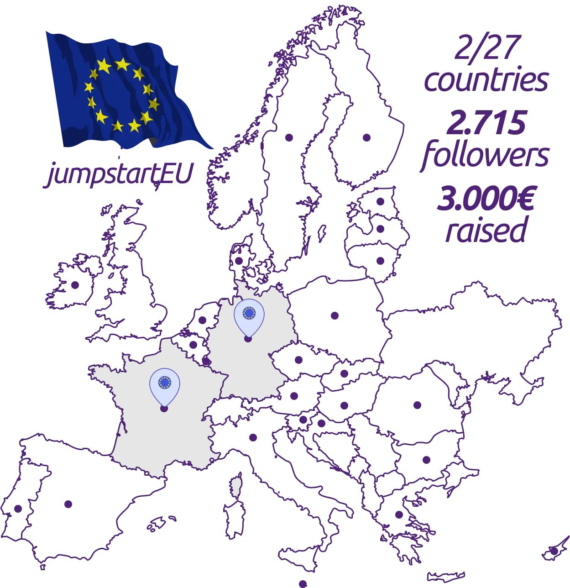
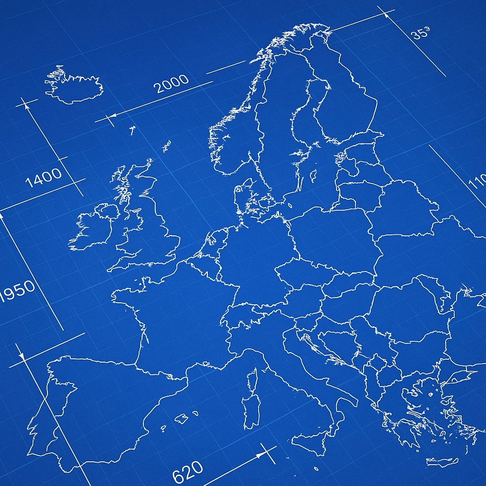
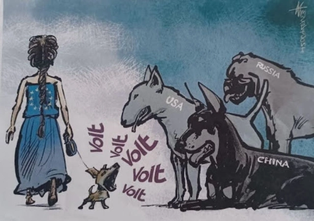

Was ist "jumpstartEU"? Das Verb "jumpstart" aus dem Englischen kann übersetzt werden mit: (1) (Fahrzeug) ein Fahrzeug überbrücken und neu starten, zum Beispiel: to jump-start a car, (2) (figurativ, zum Beispiel, ein Projekt oder ein Wirtschaftssystem revitalisieren) neu aufsetzen, neu starten, neuen Schwung geben – zum Beispiel: to jump-start the economy.
Das europäische Projekt benötigt dringend einen "Jumpstart" und das ist auch die Idee hinter "jumpstartEU", einer persönlichen Initiative, die ich wenn möglich zu einem bestimmten Zeitpunkt in meine Volt einbringen und dort weiterentwickeln und wachsen lassen möchte.
Was, wenn die EU nicht ins Stocken geraten wäre?
Keine "Daumen-hoch"-Einstimmigkeit für das EU-USA-Handelsabkommen
Anstatt ein wirtschaftlicher und geopolitischer Block, der neben den USA und China bestehen könnte, haben nationale Regierungen über Jahrzehnte notwendige Reformen der Europäischen Union verhindert. Und nun? Ist die "Union der Willigen" das Beste, was Europa zu bieten hat, weil keine Regierung "willig" genug ist, zuzugeben: gemeinsam sind wir stärker.
Allein zu handlen bedeutet 5 % Verteidigungsausgaben für die NATO akzeptieren zu müssen, weil jede Regierung lieber 27-mal für dasselbe zahlt, anstatt in Richtung eines gemeinsamen europäischen Militärs zu arbeiten. Allein zu handeln bedeutet unausgeglichene Handelsabkommen akzeptieren zu müssen, weil jede Regierung lieber ihre Exportmärkte schützt, statt geschlossen aufzutreten und unseren Binnenmarkt zu integrieren um eventuelle Zölle auszugleichen. Und von einer halben Fußballmannschaft, die zu Friedensverhandlungen fliegt, fange ich erst gar nicht an.
Das alles muss nicht sein. Die Europäische Union könnte zu dem werden, was wir uns vorstellen. Wenn wir das europäische Projekt neu starten.
Demokratie ist wie Open Source
Demokratische Systeme ähneln Open-Source-Projekten. Beide benötigen "Contributions", um zu funktionieren: Eine Spende. Eine Stimme. Selber aktiv werden. Beide benötigen fähige "Maintainer", wenn nicht sogar Visionäre, die eine Roadmap vorantreiben und ein Projekt in einer sich verändernden digitalen oder geopolitischen Landschaft weiterentwickeln.
Leider fehlen dem europäischen Projekt heute sowohl "Contributions" als auch "Maintainer". Stattdessen werden Millionen investiert, damit die EU scheitert, während europäische Institution kuschen müssen – vor nationalen Interessen und ausländischen Mächten. So wie eine vernachlässigte Software Gefahr läuft, übernommen zu werden oder nicht länger zu funktionieren, steht auch die Europäische Union an einem Scheideweg.
Wir können die Fundamente der Europäischen Union weiter erodieren lassen. Oder wir werden aktiv und versuchen, das europäische Projekt wieder auf Kurs zu bringen. Die angesprochenen Mängel zu beheben ist die Idee von jumpstartEU. Es geht darum:
(1) signfikante "Contributions" zu sammeln, um Projekte zu finanzieren, die das Bewusstsein für die Bedeutung der EU in der Bevölkerung stärken um Reformen bei Wahlen einzufordern, sowie
(2) die entscheidenden "Maintainer" zu finden, die die europäische politische Agenda beeinflussen, nationale und europäische Führung zur Verantwortung ziehen und am nächsten Kapitel der europäischen Union mitschreiben.
Europa braucht neuen und nachhaltigen Elan
Europaparlamentswahlkampf 2024 (Foto: Thomas Lambert)
jumpstartEU ist eine paneuropäische Initiative und kreativer Fahrplan. Ziel ist nicht nur, ins Parlament einzuziehen, sondern die EU-Agenda und eine von Mitgliedstaaten dominierte Kommission mit einer lauten und einfallsreichen Opposition zu fordern. jumpstartEU ist die Verbindung zwischen Basisbewegung und politischem Handeln.
jumpstartEU will ein Netzwerk aufbauen, um den Status quo der heutigen Europäischen Union in Frage zu stellen und Finanzierung für grenzüberschreitende Initiativen zu suchen, die eine Reform der Europäischen Union bis 2029 vorantreiben. Wie beim Überbrücken eines Autos will jumpstartEU die Impulse und Energie liefern, die das europäische Projekt wiederbeleben.
jumpstartEU hat eine Seed- und Wachstumsphase. Wie in einem Start-up suche ich nach der Anlauffinanzierung, um ein Netzwerk über alle Mitgliedsstaaten, sowie Reichweite zum Thema europäischen Reformen aufzubauen, die beide als Türöffner in der Wachstumsphase funktionieren.
Wenn Du mit Ideen, Deinem Netzwerk oder beim „Aufladen“ der jumpstartEU-Batterie helfen möchtest:
jumpstartEU befindet sich bis zum Frühjahr 2026 in der Seed-Phase. Follower bisher nur auf LinkedIn. Finanzierung bisher aus 2/27 Ländern.

Initiativen
Was möchte ich konkret innerhalb von jumpstartEU tun? Hier sind die ersten Projekte auf meiner Roadmap, an denen ich gerne mit oder ohne Volt arbeiten möchte – vorausgesetzt, ich finde die nötigen Mittel und Unterstützer. (Namen sind Platzhalter; einige Ideen bleiben im „Stealth-Modus“ und stehen vorerst nicht auf der Liste).
EBIs in Serienproduktion
Europäische Bürgerinitiativen (EBI) erfordern eine Million Unterschriften in ganz Europa innerhalb von 12 Monaten, damit die Europäische Kommission ein Thema evaluiert. Es ist ein bisher wenig genutztes Instrument direkter Bürgerbeteiligung, das, methodisch eingesetzt, ermöglichen würde, die europäische Gesetzesagenda nachhaltig zu beeinflussen. Ziel ist eine Mailingliste oder App mit einer Million EU-Bürgern, die bereit sind, vorgeschlagene EBIs zu prüfen und zu unterzeichnen. Denn auf change.org unterschreibst Du, aber Du veränderst nichts. Aber was wenn jede Initiative, die Du unterstützen und unterschreiben möchtest tatsächlich im Gesetzgebungsprozess landen würde? Und wir jede Menge Initiativen einbringen?

EU-Blaupause
Wir sind uns alle einig, dass Europa nicht wie die Vereinigten Staaten werden soll (nicht nur dem Namen nach). Wir sprechen über Förderalismus und transnationale Listen, aber ich habe das Gefühl, niemand hat sich ernsthaft Gedanken gemacht, wie all diese Dinge in der Praxis funktionieren sollen. Kritisieren ist einfach, aber konstruktive Vorschläge für die EU-Entscheidungsfindung, das Funktionieren der Institutionen und länderübergreifende Kampagnen sind selten. Was wäre, wenn wir einen solchen Vorschlag hätten? Eine EU-Blaupause! Um den Regierungen den Weg zu weisen. "If you build it, they will come" heißt es in Field of Dreams. Funktioniert vielleicht auch mit Europa - probieren wir es aus!

Europäisches Bewußtsein
Coca-Cola, Hollywood, die Nationalhymne bei jedem Event: die USA wissen, wie man sich vermarktet. Die Europäische Union? Nicht wirklich - oder wer erinnert sich noch an „You are EU“? Die EU ist ein bürokratischer Koloss, der von nationalen Regierungen bei jeder Gelegenheit schlechtgeredet wird. Die Akzeptanz der EU mag auf einem Allzeithoch sein, aber es ist nicht einfach, sich in Paragraphen zu verlieben, statt in Herzen. Wenn Viktor Orbán ganz Ungarn mit „EU ist sch....“-Plakaten tapezieren kann, warum machen wir das nicht auch? Mit Herz, Verstand und Kreativität ein positives Bild der EU aufzubauen. Denn je mehr Bürger die EU und ihre Bedeutung verstehen, desto schwieriger wird es, Reformen zu verweigern. Wir haben die kollektive Kreativität und Vielfalt in Europa - wenn wir das Budget finden, werden wir sicherlich überrascht sein, wie viel Druck gute Werbung für Europäische Reformen erzeugen kann.